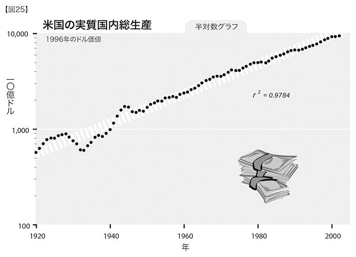
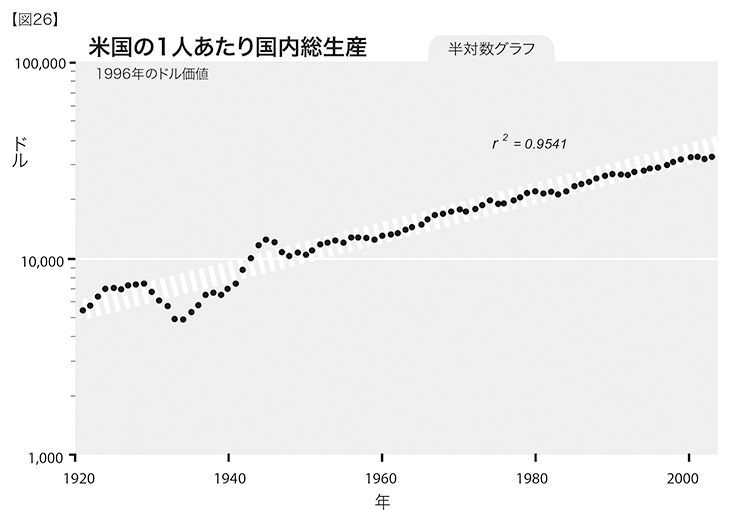
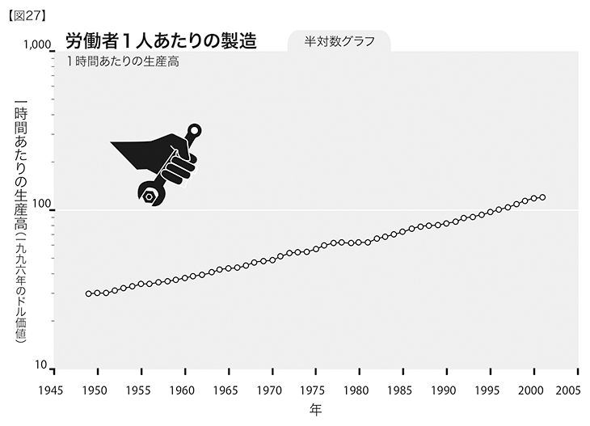

道理をわきまえた人は自分を世界に合わせる。道理をわきまえない人は、世界のほうを自分に合わせようとして譲らない。したがって、全ての進歩は、道理をわきまえない人のおかげなのだ。
──ジョージ・バーナード・ショー「革命家への金言」『人と超人』収載、一九〇三年
あらゆる進歩の根底には、全ての有機体が自身の収入以上の生活をしたいとする、普遍的な生来の欲求がある。
──サミュエル・バトラー『覚書』一九一二年
もしも今、あのときのように車に乗り込んで西海岸を目指し、新しいビジネスを始めようとしているとしたら、バイオテクノロジーとナノテクノロジーに狙いを定めるだろう。
──ジェフ・ベゾス Amazon.comの創業者、ＣＥＯ
八〇兆ドルを手に入れよう！ チャンスは今だけ
この節を読んで書かれていることを理解するだけで、あなたは、八〇兆ドルを手にすることができる。くわしいことは以下を参照のこと（著者は、読者の気をそらさないためにはどんな手でも使うものだが、わたしは真剣にこれを書いている。ただし、さらに詳細を説明する前に、この段落の冒頭の一文を注意深く読んでおいてほしい）。
収穫加速の法則は、基本的には経済理論だ。現在の経済理論と経済政策の基盤とされているのは、エネルギーのコストや、商品価格、工場や設備への投資などを重要な駆動要因とする、時代遅れのモデルである。その一方で、コンピューティング能力、メモリ、帯域幅、テクノロジーの規模、知的財産、知識などといった、経済を実際に動かし、ますます重要性を高めている（そしてますます増大している）要素が、たいていは見落とされている。
競争の激しい市場からの経済的な要請こそが、テクノロジーを前進させ収穫加速の法則をいっそう強める第一の要因である。そしてまた、収穫加速の法則が経済的な相互関係を変容させる。経済的な要請は、生物の進化における「生き残り」に相当するものだ。それぞれに固有な経済的必然性にかなった無数の小さな前進を重ねることで、よりインテリジェントで小さな機械が現実のものとなる。使命をより正確に果たすことのできる機械ほどその価値は高まり、そのために、その機械は作り続けられていく。何万もの事業が、収穫加速の法則をさまざまな側面から、多様な方法で徐々に前進させていっている。
当面のビジネスサイクルを度外視して、実業界で、それもとりわけソフトウェア業界において、「ハイテク」を支援する動きが非常に高まっている。わたしが、光学式文字認識（ＯＣＲ）と音声合成の会社（カーツワイル・コンピュータ・プロダクツ）を始めた一九七四年当時には、米国内でのハイテクベンチャーの取引額は、合計で三〇〇〇万ドルに達しなかった（一九七四年のドル価値で）。最近のハイテク景気の後退（二〇〇〇～〇三年）の間でも、この数字は、およそ一〇〇倍になっている046。この動きを止めるには、資本主義を廃止して、経済競争を根絶やしにするくらいのことが必要だろう。
知識をベースとした「新しい」経済に向けての動きは、指数関数的ではあるが、漸進的でもあると指摘しておくのは重要だ047。いわゆるニューエコノミーによってビジネスモデルが即座に変化しなかったとき、この考え方にはもともと欠陥があったのだとすぐさま否定する人が多かった。知識が経済を支配するまでには今後数十年はかかるだろうが、実際にそうなったときには、ものごとが根底から変化するだろう。
これと同じ現象が、インターネットと電気通信のバブルとその崩壊にも認められた。インターネットと電気通信が普及して根本的な変革が起こるだろうとする妥当な期待が高まり、景気に火がついた。ところが、想定された時間の枠組みがあまりに非現実的で、予想どおりの変革が起きなかったために、市場の資本が総額二兆ドル以上消え失せた。しかし次に示すように、これらのテクノロジーの導入はじつになめらかなもので、バブルとその崩壊をうかがわせるものはなにもなかった。
経済学の授業で教えられたり、連邦準備制度理事会（ＦＲＢ）の金融政策や、政府機関の経済政策の策定に用いられ、また、さまざまな経済予測に利用されるあらゆる経済モデルは、実質的に、長期的トレンドの見方が根本から間違っている。なぜなら、モデルの基盤となるものが、歴史を指数関数的に捉えたものでなく、「直感的、線形的」に捉えたもの（変化のペースが現在の率のままで続くと仮定）であるからだ。こうした線形的なモデルが一時的にはうまく行くように見えるのは、おおかたの人々がそもそも直感的で線形的な見方をしてしまうのと同じ理由による。つまり、ほんの短い期間だけを捉えて経験するのなら、指数関数的な傾向も線形に見えるからだ。指数関数的な傾向の、あまりなにも起こらない初期の段階においては特にそうだ。しかし、いったん「曲線の折れ曲がり」地点まで達し、指数関数的成長が爆発的な勢いで始まると、線形的なモデルは崩壊する。
この本を書いている今、米国では、社会保障制度の改革が議論されている。議論の根拠として、二〇四二年までにわたる将来予測が用いられている。この時間の枠組みは、わたしが特異点についての予測を立てた期間（第三章を参照）とほぼ同じだ。これほど長い時間枠にわたる経済政策が検討されるのはまれだ。しかも、予測に使われた寿命の伸びや経済成長のモデルは線形的で、かなり非現実的なものである。まず、寿命の伸びは、政府の控えめな予測を実際には大幅に超えるだろう。そのうえ、人々は六五歳で仕事から引退しようとはしなくなる。体も頭脳も、三五歳に相当するほど若いのだから。なによりも重要なのが、「ＧＮＲ」テクノロジー（第五章を参照）関連の経済成長だけでも、予測に使われている一・七パーセントという値を大きく上回るだろうということだ（この数値は、過去一五年間の事象さえもひじょうに控えめに評価している）。
生産性上昇率の根底にある指数関数的な傾向は、ちょうど今、爆発的な成長の段階にさしかかったところだ。米国の実質国内総生産は、図25にあるように、テクノロジーによって生産性を改善することで、指数関数的に成長してきた048。

国内総生産が指数関数的に成長する要因は、人口の増加だと指摘する批評家もいるが、ひとりあたりの数値をとっても、同じ傾向が認められる049（図26）。

経済の根底にある指数関数的な成長は、周期的に訪れる景気の後退よりも、はるかに強い力をもっていることに注意してほしい。深刻な景気後退や不況が起こっても、たいていは、基盤となる曲線から一時的に逸脱するにすぎない。あの大恐慌のときでさえ、根底にある成長パターンの筋道からごくわずかに下降しただけだった。景気後退や不況のいずれの場合でも、経済は、そうした現象が一切起こらなかった場合とまったく同じところに落ち着くものだ。
世界経済は、加速を続けている。世界銀行は、二〇〇四年の終わりに発表した報告書で、前年の世界の経済成長率は四パーセントで、過去のどの年よりも好調な伸びを示した、と述べている050。さらに、成長率がもっとも高かったのは、発展途上国だった。途上国の成長率は六パーセント、中国とインドを除いても、五パーセントを上回っている。東アジアと太平洋地域で、極端な貧困状態にある人の数は、一九九〇年の四億七〇〇〇万人から、二〇〇一年には二億七〇〇〇万人に減少し、二〇一五年には二〇〇〇万人以下になると世界銀行は予測している。他の国々でも、これほど劇的ではないが、同じような経済成長を示している。
労働生産性（労働者ひとりあたりの経済生産高）も指数関数的に成長している。これらの統計値は、実際にはひじょうに控えめな数値となっている。なぜなら、製品とサービスがもつ品質や特性の大幅な改良を十分に反映していないからだ。「車はどこまでいっても車、たいして変わらない」とはもう言えない。自動車の安全性、信頼性、その他の特徴は大きく向上している。コンピューティングをとっても、今日の一ドル分のコンピューティングは、一〇年前の一〇〇〇ドル分よりもはるかに強力だ（一〇〇〇倍以上にもなっている）。こうした例はいくらでもある。医薬品の効果も増大している。今や、疾患や加齢のプロセスを引き起こす代謝経路に狙いを定め、最小限の副作用で正確な修復を行うようにデザインされているからだ（ただし、今日の市場に出回っている薬の大部分は、まだ、古いパラダイムに属している。第五章を参照）。ウェブ上で五分で注文して家まで届けてもらう商品は、店まで取りに行かなくてはならない商品よりもずっと価値が高い。あなたひとりの体に合わせて仕立てられた服は、たまたま店の棚にあった服よりも価値が高い。こうした類いの改善はほとんど全ての製品カテゴリーでなされているが、生産性の統計には一切反映されていない。
生産性を測る統計手法では、利益は計算から除外される傾向にある。つまり、一ドルと引き替えに、一ドル分の商品やサービスを得ただけだ、というわけだ。実際には、一ドルで、商品やサービス以上のものを得ているのに（コンピュータは、この現象を表す極端でありふれた例だ）。シカゴ大学教授のピート・クレノーと、ロチェスター大学教授のマーク・ビルズの試算では、今ある商品を恒常ドルで表した価値は、品質が改善されたために、過去二〇年間で年に一・五パーセント増大している051。それでもこの計算には、まったく新しい製品や製品カテゴリーの導入は考慮に入れられていない（携帯電話、ポケットベル、ポケットコンピュータ、ダウンロードした楽曲、ソフトウェアプログラムなど）。ウェブという、急速に伸びゆく価値も入っていない。オンライン百科事典や検索エンジンといった、人類の知識に到達する方法をどんどん簡便にしてくれる無料の情報源の利用価値を、どうやって測ればよいのだろうか。
インフレーションの統計を所管する労働統計局は、品質の成長率を年間たったの〇・五パーセントと見込んだモデルを使っている。クレノーとビルズの控えめな試算を当てはめるなら、品質の改善を過小評価しているために、インフレ率を年間一パーセント以上過大評価〔つまり、インフレ率を差し引いた実質成長率を過小評価〕する仕組みになってしまっている。しかも、新しい製品カテゴリーは考慮に入れられていない。
生産性の統計手法にこうした弱点はあるにせよ、生産性における利益は、現に、指数関数曲線の急勾配の部分に達しつつある。労働生産性の伸びは、一九九四年以前は年に一・六パーセントだったが、一九九四年には二・四パーセントに上昇し、現在ではさらに急速に高くなっている。製造業における一時間あたりの労働生産性は、一九九五年から一九九九年にかけて、年に四・四パーセント上昇した。耐久消費財製造業の労働生産性は、年に六・五パーセント伸びている。二〇〇四年の第Ⅰ四半期の生産性（季節調整済み、年率）は、商業部門では四・六パーセント、耐久消費財の製造では五・九パーセントとなっている。
過去半世紀におけるひとり一時間あたりの労働生産性は、このようになめらかな指数関数的成長となっている（図27）。ここでも、情報テクノロジーを購入する際のドルの威力が大幅に増大していることは、考慮に入れられていない（全体的なコストパフォーマンスは、だいたい一年で二倍になっている052）。

デフレは悪いことか？
一八四六年には、わが国において、機械が縫った衣類は一枚もなかったはずだ。その年に、ミシンについての米国初の特許が登録、公示された。今では、何千人もの人々が、カシミール地方の乙女の指に匹敵する繊細さをもった鉄の指で縫われた衣服をまとっている。
──「サイエンティフィック・アメリカン」誌 一八五三年
本書を執筆している間の、主流派経済学者の多くが懸念することといえば、政治的に右か左かにかかわらず、それはデフレである。お金の価値が高くなるというのは、よいことのように感じられるのに、なぜだろう。経済学者たちは、消費者が必要なものや欲しいものをより少ない金で買えるのなら、経済が縮小してしまう（ドル換算で）と心配しているのだ。しかし彼らは、生身の消費者が、生まれつき飽くことを知らないニーズや欲求をもっているということに気づいていない。半導体業界は、年間四〇から五〇パーセントのデフレに「苦しんで」いるにもかかわらず、総収入は過去半世紀の間、毎年一七パーセントも上昇してきた053。経済が実際に拡大しているのだから、デフレの理論上の影響は心配には値しない。
一九九〇年代と二〇〇〇年代初期には、史上最大の強力なデフレが起こった。今現在、大きなインフレがどこにも起こっていないのは、このためだ。確かに、史上まれに見る失業率の低さや、高い資産価格、経済成長などはインフレの要因だが、これらは、コンピューティングやメモリ、通信、バイオテクノロジー、小型化や、総体的な技術の進歩率などの、情報をベースとするあらゆるテクノロジーのコストパフォーマンスが指数関数的に向上していることで相殺されている。これらのテクノロジーの影響は、全ての産業に深く及んでいる。さらに、ウェブやその他の新しい通信テクノロジーを用いることで、流通経路における仲介業者の排除が著しく進んでいる。そのうえ、作業効率や管理効率もいっそう向上している。
情報産業が経済のあらゆる部門で影響力をますます増大させているために、ＩＴ産業の尋常ではないデフレの影響も拡大していっている。一九三〇年代の大恐慌時代のデフレは、消費意欲が失われ、通貨供給量が激減したために引き起こされた。今日のデフレはこれとはまったく異なる現象だ。生産性が急速に上昇し、あらゆる形態の情報がますます浸透することがその原因となっている。
この章に載せたテクノロジーの傾向を示す図全てに、大規模なデフレが表れている。効率化が急激に進んだことによる影響の実例は、至るところにある。ＢＰアモコ社の二〇〇〇年における石油発見の費用は一バレルあたり一ドル以下で、一九九一年から一〇ドル近くも下がっている。一回のインターネット取引で銀行が負担する処理費用は、わずか一セントだ。窓口を使うとこれが一ドル以上になる。
ナノテクノロジーから受ける重大な影響は、ソフトウェアの経済効果がハードウェアにも、すなわち物理的な商品にも波及するということだ。この点はとても重要だ。今のところ、ソフトウェアの価格は、ハードウェアの価格よりも、さらに急速に下落している。
分散型で知的なコミュニケーションの影響をもっとも強く感じているのが、たぶん、ビジネスの世界だろう。今やウォール街のムードはがらりと変わってしまったが、一九九〇年代の好景気の時期に、いわゆるｅ企業が桁外れに高く評価されていたのは、妥当な認識だった。今は、ビジネスを何十年も支えてきたビジネスモデルが、抜本的に変容するその初期の段階にある。これからは、顧客とじかに個人的なやりとりをすることを基本とした新しいモデルがあらゆる産業を変革し、製品やサービスのおおもとの供給源と顧客とを従来隔てていた中間層が、大規模に排除されることになるだろう。
知識や情報にアクセスする道が広がったことは、消費者と商品（サービスを含む）の提供側との力関係を変化させている。患者はますます、自分自身の病気の状態やとりうる治療法を高度に理解したうえで、医者の診察に臨むようになってきた。トースターや車や家を買おうとする人や、銀行に口座を開いたり保険に加入しようとする人など、実質的に全ての商品の消費者は、今や、最適な特徴や価格の品を正しく選択してくれる自動ソフトウェアエージェントを使っている。eBayなどのウェブサービスは、これまでにないやり方で、買い手と売り手を急速に結びつけている。
顧客の願望や欲求は、たいていは本人でも気づいてはいないが、急速に、ビジネス関係を発展させる要因となってきている。ネットワーク環境が整った消費者は、たとえば服を買う際に、近所の店の棚にたまたま残っていた商品で満足することはなくなるだろう。その代わりに、自分自身の身体の三次元画像（詳細な身体スキャンをもとにしたもの）上で、考えられる何通りもの組み合わせを試してみて、ぴったりの素材とスタイルを選び、服を仕立ててもらうようになる。
ウェブを使った取引に現在見られる不便なこと（たとえば、商品をじかに手に取って見ることができなかったり、生身の店員ではなく、融通のきかないメニューやフォームを前にして頻繁にフラストレーションを感じたりする）は、時代の趨勢が電子の世界に有利なものへと勢いよく変わっていく中で、徐々に解消されるだろう。この一〇年で、明確な物理的物体としてのコンピュータは姿を消し、ディスプレイは眼鏡に組み込まれ、電子機器は衣服に織り込まれ、視覚的なヴァーチャル・リアリティの環境にどっぷりと浸かることになる。そして「ウェブサイトに行く」ことは、ヴァーチャル・リアリティ環境に入ることを意味するようになる。少なくとも、視覚と聴覚については。そこで、現実であれシミュレートされたものであれ、商品や人とじかに触れ合うことができる。シミュレートされた人間は、少なくとも二〇〇九年までは、トータルな人間としての標準にはまだ到達しないが、店員や予約係や調査アシスタントとしてなら十分に満足できるだろう。触覚インターフェース（実際にそのものに触れているのと同様の感覚を体験できる）のおかげで、商品や人に触ることができるようになる。昔ながらの店舗や建物をもった商売は、もうすぐ到来する双方向コミュニケーションの豊富なインターフェースによって打ち負かされて、跡形もなくなることはないだろうが、もはや永続的な利点を見出すことは難しい。
このような方向に進めば、不動産業は大きな影響を被る。オフィスに社員を集める必要性が徐々になくなっていくからだ。わたし自身の会社の実態からしても、すでに、所在がばらばらのスタッフを集めてチームを上手に編成することができるようになっている。一〇年前には、こんなことはなかなか難しかった。視覚的聴覚的に完全なヴァーチャル・リアリティ環境は、今世紀の最初の二〇年間で全面的に普及して、どこでも好きなところに住んで仕事をするという傾向がいっそう強くなるだろう。五感全てを組み込んだ完全没入型のヴァーチャル・リアリティ環境は、二〇二〇年代の終わりには実際に手に入ることになるが、そうなると、現実のオフィスを使う理由はまったくなくなる。不動産は、ヴァーチャルなものになる。
経済が全体的に見て成長しているのは、富や価値のまったく新しい形やレベルが出現したことの表れだ。それらは、以前には存在していなかったか、少なくとも、経済の大きな部分を占めてはいなかった。たとえば、ナノ粒子ベースの材料や、遺伝情報、知的財産、コミュニケーションポータル、ウェブサイト、帯域幅、ソフトウェア、データベースなどをはじめとする、新テクノロジーを基盤とする数多くのカテゴリーがそうだ。
さて、このまとめの節の冒頭で言った宣伝文句のことについて補足しておこう。現在の株価は、将来への期待に基づいて決まっている、と考えてみてほしい。近視眼的な（文字どおりの意味で）線形的、直感的な展望は、誰もがとっている見方で、そこで一般的に用いられている経済予測についての見識は、非常に低い。株価は、市場における買い手と売り手の合意を反映するものなので、将来の経済成長について多くの人々が共通してもつ線形的な予測がそこに隠れ、株価に反映されている。しかし、収穫加速の法則では、進歩の率が加速化を続けるために、成長率は指数関数的に伸び続ける、とはっきり示されている。